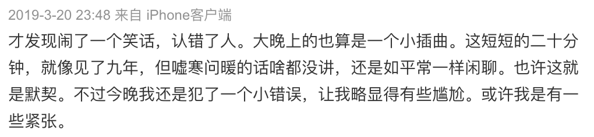
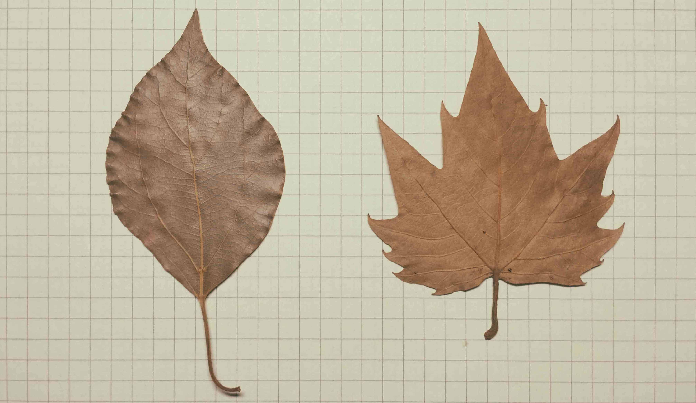

写给羽娜：
从大学开始到现在，我们相识已然快十年。不禁感叹时光匆匆，所幸我们仍然保持着某种联系。相识十年， 我们彼此错过很多次见面的机会。终于在去年3月20日那天晚上，我第一次见到了你。不过现在一想起那天晚上我犯的一个小错误，就略显得尴尬。不知道那会儿，羽娜你有没有发现我的一个小动作。先让你闭目想想。
下面是那天晚上我发的一条微博，是我当时复杂的心情：

羽娜，今天是你的生日，祝你生日快乐！在往后的日子里，你一定要做一个开心的人儿。记住，爱笑的女生运气不会差。 还记得14年的时候，你送我的那两片秋天的叶子吗？我相信他们会给我带来好运，也会给你带来好运🍀

2020年03月04日 桃子🍑